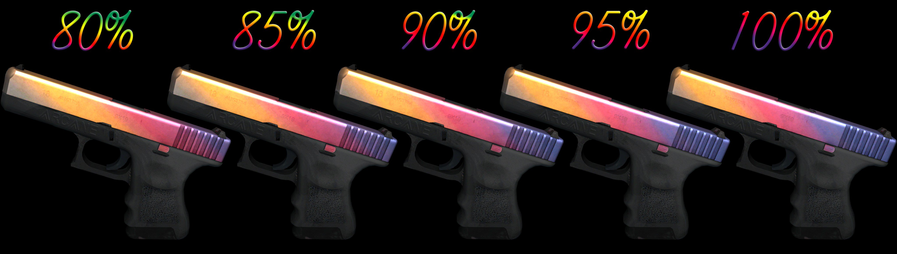

Premium Pistol Skins
Pistol skins offer excellent value in the CS:GO market. As starting weapons used in pistol rounds and eco buys, they receive significant in-game visibility despite their lower average price compared to rifles and knives.

Desert Eagle Pattern Guide
The Desert Eagle Case Hardened skin features a randomly generated pattern of blue, gold, and purple. "Blue gems" with high percentages of blue coloration can be worth 3-10x the market price. Similarly, the Blaze skin's pattern affects flame placement, with centered flames being most desirable.
Glock Fade Percentage Guide
The Glock-18 Fade varies in appearance based on its "fade percentage." Higher fade percentages display more pronounced purple at the front of the slide. Full fades (95-100%) command significant price premiums over lower percentage variants.
Desert Eagle Skins

The Desert Eagle (Deagle) is the most popular pistol for skin collectors due to its high damage, distinctive appearance, and frequent use in highlight-worthy plays.
Notable Desert Eagle Skins:
- Blaze
- Released in The Dust Collection
- Distinctive flame design on black base
- Limited supply since the collection is discontinued
- Printstream
- Modern black and white design with animated elements
- Clean aesthetic with high contrast
- Popular among professional players
- Code Red
- Vibrant red and black cyberpunk aesthetic
- Part of the Horizon Case
- Visual design stands out in gameplay
USP-S & P2000 Skins

As the Counter-Terrorist starting pistols, the USP-S and P2000 feature prominently in pistol rounds. Players can equip either model, creating separate markets for their skins.
Notable USP-S & P2000 Skins:
- USP-S Kill Confirmed
- Features a striking target reticle design
- Strong demand due to visual appeal
- Highly visible during gameplay
- USP-S Neo-Noir
- Part of the Neo-Noir art series
- Purple and pink cyberpunk-noir aesthetic
- Popular in competitive play
- P2000 Ocean Foam
- Clean turquoise design
- Used in trade-up contracts for Desert Eagle Golden Koi
- Value tied to trade-up potential
Glock-18 Skins

As the Terrorist starting pistol, the Glock-18 appears in nearly every competitive match. Its skins are especially visible during pistol rounds, which attract high viewership. This glock also has a sticker on it, one of the most valuable in the game.
Notable Glock-18 Skins:
- Fade
- Available only from early CS:GO weapon cases
- Gradient of yellow, pink, and purple
- Highly sought after by collectors
- Water Elemental
- Vibrant art style with fire spirit design
- Popular budget-friendly option
- Consistently liquid in trading markets
- Bullet Queen
- Detailed artwork with anime-inspired character
- Part of the Prisma 2 Collection
- Popular for its unique visual style
Pistol Trade-Up Strategies
Pistol skins are often used in lucrative trade-up contracts. For example, ten P2000 Ocean Foam (Classified) skins can be traded up for a Desert Eagle Golden Koi or an AWP Graphite. Strategic trade-ups focusing on collection distribution can yield significant profits.
Sticker Placement on Pistols

Sticker placement significantly impacts added value. On most pistols, the position above the handle (closest to the player's view in-game) is considered the most valuable. Rare tournament stickers from early majors can increase a pistol's value by 10-50% of the sticker's price.
Other Notable Pistols
- Five-SeveN
- Case Hardened (valuable blue patterns)
- Monkey Business (banana magazine design)
- Hyper Beast (colorful monster artwork)
- CZ75-Auto
- Victoria (gold filigree design)
- Xiangliu (dragon-inspired artwork)
- Yellow Jacket (wasp-themed design)
- Dual Berettas
- Cobalt Quartz (blue crystalline pattern)
- Hemoglobin (blood-red design)
- Marina (nautical blue and white pattern)
Rare Pattern Pricing Guide
| Pistol | Pattern Type | Market Price Multiplier |
|---|---|---|
| Desert Eagle Case Hardened | Blue Gem (90%+ blue) | 5-10x |
| Five-SeveN Case Hardened | Blue Gem (90%+ blue) | 3-8x |
| Glock-18 Fade | Full Fade (95-100%) | 1.5-2x |
| USP-S Blueprint | Clean Blue Pattern | 1.2-1.5x |
Investment Considerations
When adding pistol skins to your investment portfolio, consider these factors:
- First-Round Visibility
- Pistols get guaranteed exposure in pistol rounds
- Desert Eagle sees significant play in eco rounds
- CT vs. T side usage affects visibility rates
- Price-to-Prestige Ratio
- Pistols offer lower entry points than knives and rifles
- Some rare pistol skins outperform higher-tier weapons
- Greater quantity can be purchased for diversification
- Collection Status
- Discontinued collections like Dust and Assault appreciate faster
- Older case skins may benefit from case price increases
- Limited-time operation drops become scarcer over time